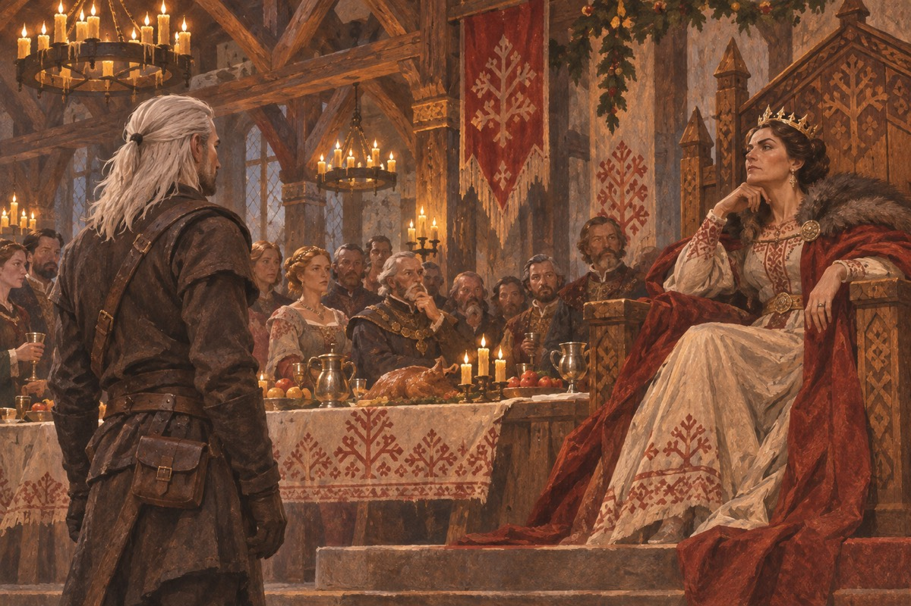
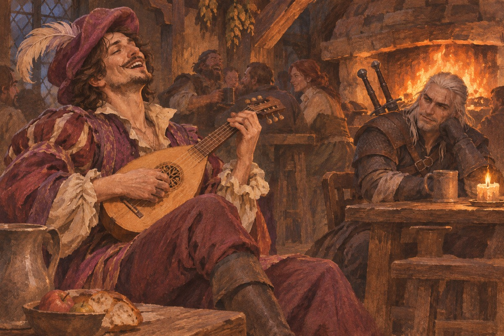
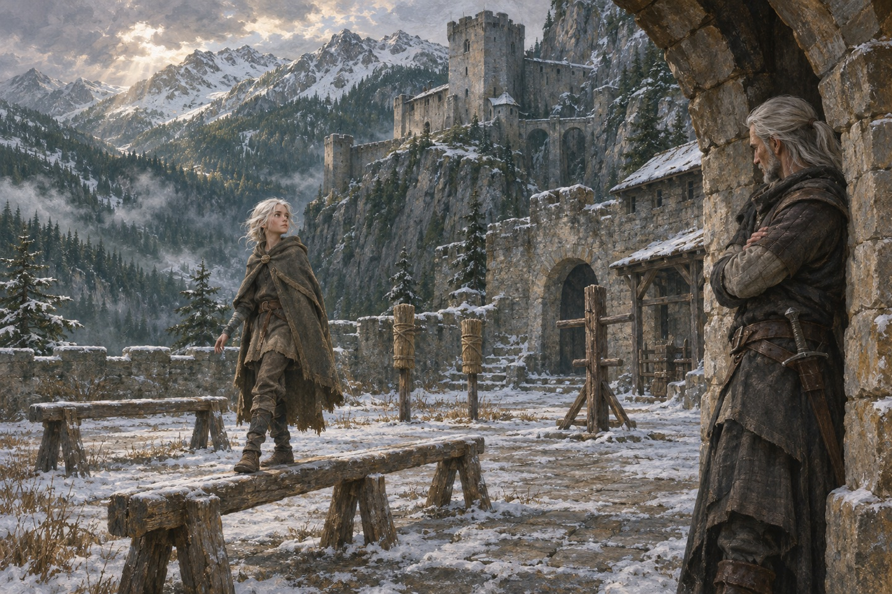
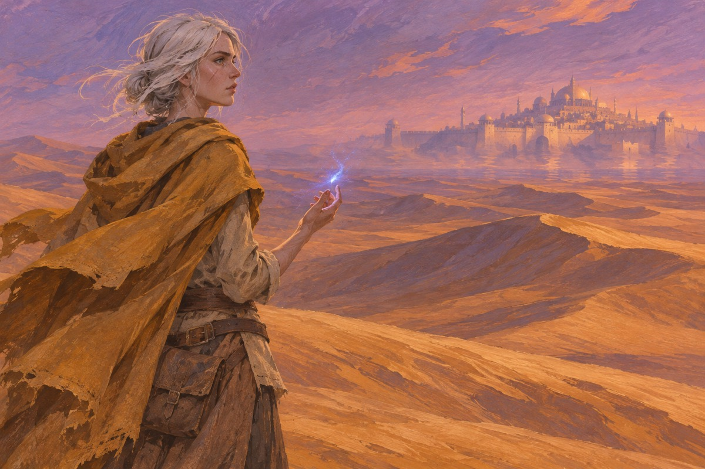
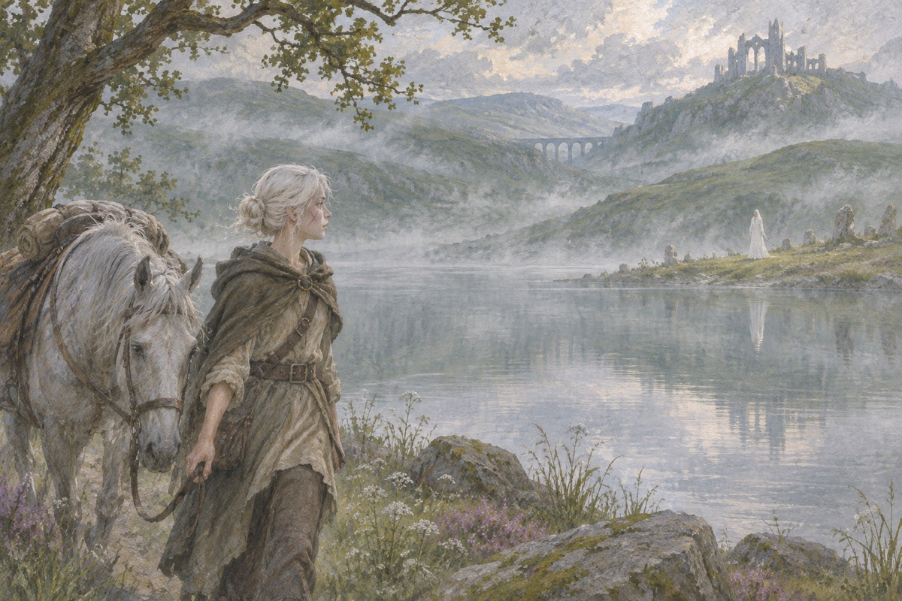

两把剑
猎魔人背两把剑，一把钢的，给人用；一把银的，给怪物用。他们从小被灌药、练剑、改造身体，活下来的十个人里有一个。杰洛特是其中一个。他的头发白了，眼睛像猫。有人说他们没有感情。杰洛特听了不反驳。他只是把剑擦干净，收进鞘里。他说：我们不是人。他说：我们是被做出来的人。他说完，把剑收进鞘。他一辈子没有穿过别的颜色。有人问他为什么。他说：这样血不明显。
屠夫
他在布拉维坎的市场上杀了一群人。那些人先动手，可老百姓只看见他杀人。他们给他起了一个外号：布拉维坎的屠夫。他后来一直带着这个外号。有个姑娘叫伦芙芮，是那件事的中心。她死了。他每年回那个城市一次，站在市场中央，站一会儿就走。他不知道那天死的人里，有几个是该死的。他只知道，从那以后，没有人再请他喝过酒。那个城市的名字他后来不提。有人问起，他说：我在那儿做过一件事。
意外律
辛特拉的卡兰瑟女王请他去解决一个问题。他用了「意外律」：他要一样她不知道已经有的东西。她要了一个孩子——她女儿肚子里的孩子。那个孩子叫希里。他说：我不要这个孩子。卡兰瑟说：你已经要了。他说：那是意外。她说：意外也是命。他说：意外律是古老的规矩。女王说：古老的东西最靠得住。他说：也最害人。她说：你要是敢碰她，我就杀了你。他说：我不碰。她说：你发誓。他说：我发誓。

叶奈法
叶奈法是女术士，驼背，丑，后来用魔法把自己改成了一个美人。她跟杰洛特认识是因为一个迪精。他们打了一架，然后在一起了。他们在一起很多年，分分合合。她说：我们两个都是被改造过的。他说：我知道。她说：所以我们才配。他说：这话不好听。她说：好听的话我不说。她说：你为什么不说话。他说：我在听。她说：听什么。他说：听你说。她说：我们两个都不正常。他说：我知道。她说：那正好。
丹德里恩
丹德里恩是吟游诗人，爱吹牛，爱女人，爱钱。他跟着杰洛特到处跑，把那些事写成歌。歌里杰洛特是英雄，现实里杰洛特常常只是运气好。丹德里恩说：你需要一个诗人。他说：为什么。诗人说：因为没有人会唱一个不说话的猎魔人。他说：你要是把我的事写进歌里，我就打断你的手。诗人说：那你打吧。他后来还是写了。他后来写了三十首歌，二十九首是假的。只有一首是真的，他没有说哪一首。

维瑟米尔
维瑟米尔是老猎魔人，凯尔莫罕城堡的看守。他把杰洛特养大，教他剑，也教他别的东西。他说：我们这一行，死得早，别爱上谁。杰洛特没听。他说：你小时候问我，为什么我们要杀怪物。我说：因为它们杀人。你说：那人也杀人。我答不上来。他说：你以后会死得很惨。杰洛特说：我知道。他说：那你还干。杰洛特说：我只会这个。他说：我年轻的时候也爱过一个人。杰洛特说：后来呢。他说：后来她死了。
尼弗迦德
南方帝国尼弗迦德在扩张。皇帝恩希尔要娶辛特拉的希里，因为她的血统能证明他对那片土地的所有权。他派了很多人去找她。有人说：那个皇帝找了她很多年。有人说：他不是要找她，他是要找她的子宫。他说：她是我女儿。有人说：她是辛特拉的继承人。他说：这两个身份不冲突。他说：我不打仗。有人说：你是猎魔人。他说：我杀怪物，不杀人。他说：你们打你们的。他说：我走我的路。他说完，把斗篷拉紧。
希里
辛特拉被攻破，卡兰瑟跳楼死了。希里逃出来，一个人在北方的森林里活了下来。她学会了偷、骗、跑。她后来被杰洛特找到。他说：你叫什么。她说：希里。他说：你几岁。她说：十一。他说：你跟我走。她说：为什么。他说：因为我要过你。她说：我外祖母从窗口跳下去了。她说：她跳之前，把我推出去了。她学会了在树上睡觉。她说：这样狼找不到我。他说：狼不会爬树。她说：人会。
训练
他把她带回凯尔莫罕，教她剑，教她药，教她怎么在雪地里活。叶奈法教她魔法。她说：我不喜欢魔法。叶奈法说：那你喜欢什么。她说：剑。维瑟米尔说：这孩子比你当年还野。杰洛特说：她比我聪明。他说：这更麻烦。她说：你为什么对我这么好。他说：因为我答应过。她说：答应谁。他说：答应我自己。他教她剑的时候很凶。她说：你为什么这么凶。他说：因为我不凶，你就会死。

火
希里在一次逃亡中走进一片沙漠，差点死。她在沙漠里学会了用火。她后来能从一个地方跳到另一个地方，那是「上古之血」的力量。她说：我看见很多世界。她说：有的世界没有冬天，有的世界没有太阳。她说：我不知道哪个是真的。她说：我在沙漠里看见一座城。她说：走近了，就没有了。她说：我不知道那是不是真的。她说：我看见一个地方，那里没有战争。他说：那是假的。她说：我知道。
出处 · 第 4 卷《燕子之塔》

女术士
叶奈法被女术士集会所抓，说她叛变。她被打，被审。她没有说出希里的下落。她说：你们要杀就杀。她说：我不会说她。杰洛特去救她。他说：你为什么不说。她说：因为她是我女儿。他说：她不是。她说：她是。她说：你们可以杀我。她说：可我不会说她一个字。他们打了她三个小时。她说：你要是说出来，我就死。她说：你要是不说，我也死。她说：那我不说。她被打完了，还是那句话。审她的人说：你为什么。她说：因为她叫我一声妈。
斯提加城堡
他们在斯提加城堡找到希里。那里正在打，很多人在杀。杰洛特被人用叉子捅穿，叶奈法用自己的命去救他，两个人都倒在血里。希里把他们带走，放在一个没有战争的地方。她说：你们休息。她说：剩下的我来。这是他们的结局之一，但不是最后一个。
骚乱
后来他们在利维亚遇上一场骚乱。人拿石头砸非人种族，杰洛特站出来挡，被一柄草叉捅进肚子。这一次没有魔法，没有希里，只有雨和泥。叶奈法跪在他旁边，说：你别死。他说：我尽量。她说：你每次都这么说。他说：我每次都尽量。这一页之后，书里没有再写他们去了哪儿。
湖中夫人
希里后来到了一个世界，那里有亚瑟王和湖中夫人。她在那里待了一段时间，学会了一些事。她最后回到自己的世界，做了一件她必须做的事。她说：我不当女王。她说：我要当猎魔人。有人说：女人不能当猎魔人。她说：那我就是第一个。她说：我不想当女王。她说：女王不能走。她说：我想走。她说：我要一把银剑。有人说：银剑是杀怪物的。她说：我知道。她第一次杀怪物的时候，手在抖。杀完她坐在雪地里，哭了。
出处 · 第 5 卷《湖中夫人》

之后
故事结束的时候，杰洛特和叶奈法在一个小地方，开了一间小屋。有人说他们死了，有人说他们走了。希里在路上，背着一把剑。她说：我要去看看别的地方。他说：去吧。她说：你不拦我。他说：我拦不住。她说：你会想我吗。他说：会。她说：那你别哭。他说：我没哭。他们三个人坐在门口，谁也没说话。太阳落下去了，他们还在坐着。她说：我们以后还见面吗。他说：会。她说：什么时候。他说：不知道。
猎魔人
有人说，那个白头发的人还在接活。有人说，他早就不干了。酒馆里的人讲这些故事的时候，谁也不确定哪一句是真的。酒馆老板说：你们说的那个人，前天还来过。他说：他点了一杯酒，喝完就走了。他说：那个人我见过。他说：他眼睛像猫。他说完，把杯子推回去。酒馆里的人说：那个猎魔人，早死了。老板说：他前天还来过。他说：那个人欠我一杯酒。老板说：他每次都这么说。